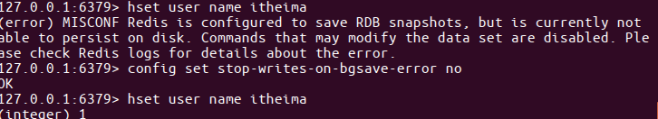
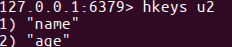
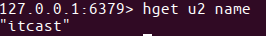
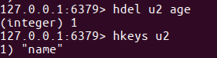

学习目标
- 能够写出Redis中hash类型数据的增删改查相关命令
hash类型
- hash⽤于存储对象，对象的结构为属性、值
- 值的类型为string
增加、修改
设置单个属性
hset key field value
例1：设置键 user的属性name为itheima
hset user name itheima

MISCONF Redis is configured to save RDB snapshots, but is currently not able to persist on disk. Commands that may modify the data set are disabled. Please check Redis logs for details about the error.
Redis被配置为保存数据库快照，但它目前不能持久化到硬盘。用来修改集合数据的命令不能用
原因：
强制关闭Redis快照导致不能持久化。 解决方案：
运行config set stop-writes-on-bgsave-error no 命令后，关闭配置项stop-writes-on-bgsave-error解决该问题。
设置多个属性
hmset key field1 value1 field2 value2 ...
例2：设置键u2的属性name为itcast、属性age为11
hmset u2 name itcast age 11

获取
获取指定键所有的属性
hkeys key
例3：获取键u2的所有属性
hkeys u2

获取⼀个属性的值
hget key field
例4：获取键u2属性'name'的值
hget u2 'name'

获取多个属性的值
hmget key field1 field2 ...
例5：获取键u2属性'name'、'age的值
hmget u2 name age

获取所有属性的值
hvals key
例6：获取键'u2'所有属性的值
hvals u2
删除
- 删除整个hash键及值，使⽤del命令
删除属性，属性对应的值会被⼀起删除
hdel key field1 field2 ...
例7：删除键'u2'的属性'age'
hdel u2 age
